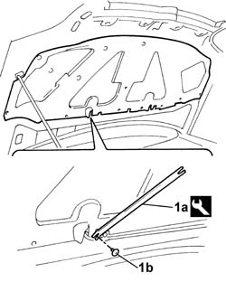

7025A22 soundproofing lining for bonnet lid - r+r
- Path
- Procedures > 70 FITTINGS > 7025 COMPARTMENT LIDS > 7025A bonnet lid > 7025A22 soundproofing lining for bonnet lid - r+r
- Kind
- repair procedure (removal / refitting; the operation number is the code)
- Applies to
- all engines; all production periods
- Interactive page
- https://sloeber94.github.io/elrnDB-fDbl/en/#/2585099
Applies to: all engines; all production periods
 Removing
Removing
 Refitting
RefittingOpen the bonnet.
1. Using the tool (1a), prise off the fixing studs (1b).
 | Name | Country |
|---|---|---|
1a | Scraper blade | 1.878.077.000 |
2. Remove the cover.

Applies to: all engines; all production periods
Refitting
RemovingCheck that the trim is undamaged.
Fit the trim and secure with the fixing studs.
Close the bonnet lid.